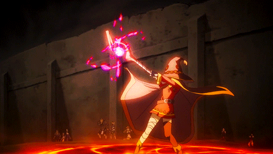

File list
This special page shows all uploaded files.
{kind=link}
{kind=link}
| Date | Name | Thumbnail | Size | User | Description | Versions |
|---|---|---|---|---|---|---|
| 13:22, 8 May 2022 | CS.gif (file) |  |
15.17 MB | G00suede | 1 | |
| 13:18, 8 May 2022 | LBX.gif (file) |  |
12.72 MB | G00suede | 1 | |
| 14:28, 27 April 2022 | Ancient Juperos Excavator.gif (file) |  |
60 KB | Zrzovous | 1 | |
| 14:26, 27 April 2022 | Ancient Juperos Kickstep.gif (file) | 10 KB | Zrzovous | 1 | ||
| 07:31, 24 April 2022 | ReginleifPet.png (file) |  |
6 KB | Randomced859 | 1 | |
| 07:31, 24 April 2022 | RandgrisPet.png (file) |  |
6 KB | Randomced859 | 1 | |
| 07:30, 24 April 2022 | IngridPet.png (file) |  |
6 KB | Randomced859 | 1 | |
| 07:28, 24 April 2022 | KoboldLeaderPet.png (file) | 2 KB | Randomced859 | 1 | ||
| 07:27, 24 April 2022 | HolySkogulPet.png (file) |  |
3 KB | Randomced859 | 1 | |
| 07:26, 24 April 2022 | HolyFrusPet.png (file) |  |
4 KB | Randomced859 | 1 | |
| 07:26, 24 April 2022 | KubkinPet.png (file) |  |
3 KB | Randomced859 | 1 | |
| 07:21, 24 April 2022 | PanzerGoblinPet.png (file) |  |
2 KB | Randomced859 | 1 | |
| 07:21, 24 April 2022 | GoatPet.png (file) |  |
3 KB | Randomced859 | 1 | |
| 07:20, 24 April 2022 | AncientMimicPet.png (file) |  |
3 KB | Randomced859 | 1 | |
| 07:19, 24 April 2022 | HarpyPet.png (file) |  |
3 KB | Randomced859 | 1 | |
| 07:18, 24 April 2022 | KoboldArcherPet.png (file) |  |
1 KB | Randomced859 | 1 | |
| 07:17, 24 April 2022 | BreezePet.png (file) |  |
1 KB | Randomced859 | 1 | |
| 07:15, 24 April 2022 | MetalingPet.png (file) | 996 bytes | Randomced859 | 1 | ||
| 05:48, 23 April 2022 | Miyu HighWizard art.png (file) |  |
621 KB | Miyu | 2 | |
| 05:44, 23 April 2022 | Miyu arch mage art.png (file) |  |
466 KB | Miyu | 1 | |
| 05:43, 23 April 2022 | Miyu altwarlock art.jpg (file) |  |
79 KB | Miyu | 1 | |
| 05:43, 23 April 2022 | Miyu warlock art.png (file) |  |
521 KB | Miyu | 1 | |
| 05:42, 23 April 2022 | Miyu Wizard art.png (file) |  |
587 KB | Miyu | 1 | |
| 07:07, 22 April 2022 | Modifier stats.png (file) |  |
64 KB | Miyu | 1 | |
| 04:27, 22 April 2022 | Lea spellbook.png (file) |  |
37 KB | Miyu | 1 | |
| 04:14, 22 April 2022 | Spell book stats2.png (file) |  |
17 KB | Miyu | 1 | |
| 04:13, 22 April 2022 | Spell book stats1.png (file) | 36 KB | Miyu | 1 | ||
| 03:22, 21 April 2022 | Earth Drive Pierce.gif (file) |  |
6.82 MB | G00suede | 1 | |
| 03:21, 21 April 2022 | Shield Press Chain Press.gif (file) |  |
6.9 MB | G00suede | 1 | |
| 06:07, 20 April 2022 | AP recovery.png (file) |  |
5 KB | Miyu | 1 | |
| 03:24, 20 April 2022 | New spellbook.png (file) |  |
19 KB | Miyu | 1 | |
| 03:24, 20 April 2022 | Old Spellbook.png (file) |  |
22 KB | Miyu | 1 | |
| 17:26, 19 April 2022 | HairyWizard.png (file) | 94 KB | HairyWizard | 1 | ||
| 10:02, 19 April 2022 | Miyu AMPTICON.png (file) | 3 KB | Miyu | 3 | ||
| 06:38, 19 April 2022 | Spell attack.gif (file) |  |
1.8 MB | Miyu | 1 | |
| 06:37, 19 April 2022 | Spell circle.gif (file) |  |
1.39 MB | Miyu | 1 | |
| 06:36, 19 April 2022 | Spell Chanting 2.gif (file) |  |
1.74 MB | Miyu | 1 | |
| 06:36, 19 April 2022 | Spell Chanting.gif (file) |  |
836 KB | Miyu | 1 | |
| 06:35, 19 April 2022 | Destructive magic.gif (file) |  | 2.95 MB | Miyu | 1 | |
| 06:35, 19 April 2022 | Anime-spells.gif (file) |  |
1.98 MB | Miyu | 1 | |
| 06:30, 19 April 2022 | WIZARD.gif (file) |  |
20 KB | Miyu | 1 | |
| 06:30, 19 April 2022 | WARLOCK.gif (file) |  |
25 KB | Miyu | 1 | |
| 06:29, 19 April 2022 | Miyu 4th class tree am.png (file) | 368 KB | Miyu | 1 | ||
| 06:29, 19 April 2022 | Bio katrinn01.png (file) | 266 KB | Miyu | 1 | ||
| 06:28, 19 April 2022 | Gratis-png-ragnarok-en-linea-ragnarok-chibi-雄-一郎-chibi-thumbnail.png (file) | 21 KB | Miyu | 1 | ||
| 06:28, 19 April 2022 | Miyu Mage Class Guide.jpg (file) | 80 KB | Miyu | 1 | ||
| 06:27, 19 April 2022 | VulcanSoulStrike.png (file) | 997 bytes | Miyu | 1 | ||
| 06:27, 19 April 2022 | ViolentQuake.png (file) | 1,015 bytes | Miyu | 1 | ||
| 06:26, 19 April 2022 | TwoHandStaffMastery.png (file) | 665 bytes | Miyu | 1 | ||
| 06:26, 19 April 2022 | TornadoStorm.png (file) | 987 bytes | Miyu | 1 |
{kind=link}
{kind=link}
{kind=link}
{kind=link}
{kind=link}
{kind=link}
{kind=link}
{kind=link}